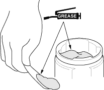
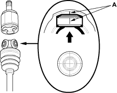
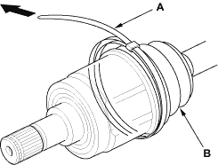
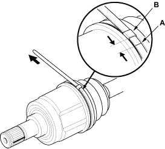

- Pack the inboard joint with the joint grease included in the new driveshaft set.
Grease quantity
Inboard joint: 150 – 160 g (5.3 – 5.6 oz)

- Fit the inboard joint onto the driveshaft, and note these items:
- Reinstall the inboard joint onto the driveshaft by aligning the marks (A) on the inboard joint and the rollers.
- Hold the driveshaft so the inboard joint is pointing up to prevent it from falling off.


- Adjust the inboard joint until the rollers are in the middle of the joint.
- Fit the boot ends onto the driveshaft and the inboard joint, then install the band (A) onto the boot (B).

- Pull up the slack in the band by hand.
- Mark a position (A) on the band 10 - 14 mm (0.4 - 0.6 in.) from the clip (B).
